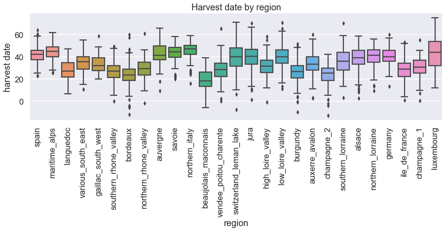
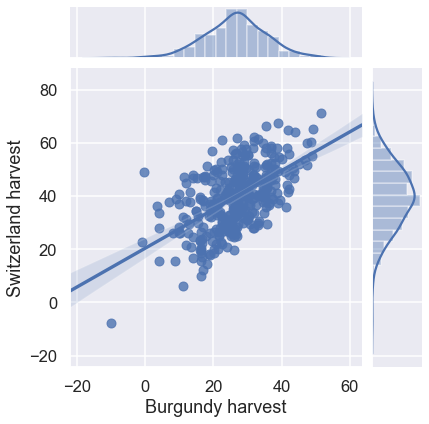
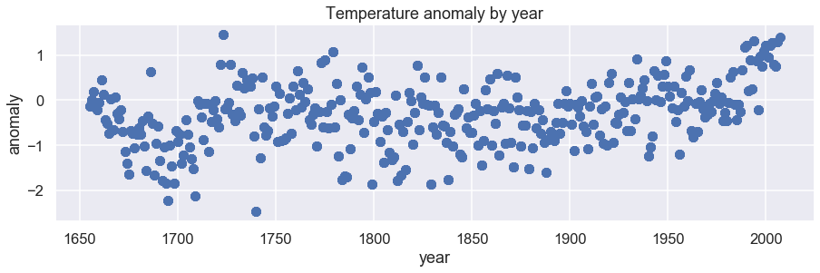
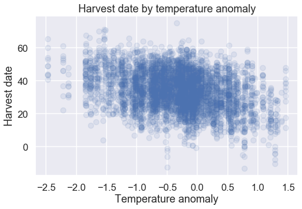

Activity 4: Grapevines in a warming world
In the last lesson, you learned about pandas, dataframes, and seaborn. You learned that the harvest dates of grapevines in Europe have been recorded for centuries and you read the data in to Jupyter to analyze using pandas.
In the cell below, import pandas again, use the pd.read_csv() function to read the data (grape_harvest.csv) in using the pd.read_csv() function, and make sure the data is ready to analyze by printing the outputs of .head(), .tail(), .describe(), and .columns functions in the cell below.
Remember to import pandas!
# Read in the grape_harvest.csv dataset here
# Use pandas functions to verify that the dataset has been read in correctly
# Print the outputs of the .head(), .tail(), .describe(), and .columns functions
# Remember to import pandas!
# You can use the following url from GitHub to read in the data:
# https://raw.githubusercontent.com/DanChitwood/PlantsAndPython/master/grape_harvest.csv
Answer
### ANSWER ###
import pandas as pd
#data = pd.read_csv("grape_harvest.csv")
data = pd.read_csv("https://raw.githubusercontent.com/DanChitwood/PlantsAndPython/master/grape_harvest.csv")
print(data.head())
print(data.tail())
print(data.describe())
print(data.columns)
year region harvest anomaly
0 1700 alsace 42.9 -0.91
1 1701 alsace 35.9 -0.76
2 1702 alsace 45.0 -1.40
3 1703 alsace 49.4 -1.21
4 1704 alsace 30.4 -0.44
year region harvest anomaly
4727 1873 vendee_poitou_charente 32.0 0.06
4728 1874 vendee_poitou_charente 2.0 -0.22
4729 1875 vendee_poitou_charente 29.0 -1.02
4730 1876 vendee_poitou_charente 32.0 -0.55
4731 1877 vendee_poitou_charente 34.0 -0.56
year harvest anomaly
count 4732.000000 4732.000000 4732.000000
mean 1832.835376 33.959510 -0.337811
std 91.713152 11.807714 0.675309
min 1655.000000 -13.000000 -2.470000
25% 1762.000000 25.900000 -0.750000
50% 1834.500000 34.000000 -0.280000
75% 1903.000000 42.600000 0.060000
max 2007.000000 75.000000 1.460000
Index(['year', 'region', 'harvest', 'anomaly'], dtype='object')
Now that your data is read in, let's use masking, data visualization, and line fitting to explore the relationship between grape harvest date and climate over the centuries.
Masking
Determining the earliest and latest harvest dates and where they occurred
We'll start off our exploration of grape harvest dates by figuring out when and where the earliest and latest harvest dates occurred.
The pandas dataframe you just created should have four columns, which are:
- 'year': the year the data was collected
- 'region': the region in Europe that the data was collected from
- 'harvest': the harvest date recorded. Harvest date is defined as number of days after August 31st. A negative number means the grapes were harvested before August 31st that year, and a positive number after.
- 'anomaly': the temperature anomaly. For a given year, this number represents how much colder (negative) or hotter (positive) Europe was compared to a long term reference value, in degrees Celsius
Below, print out statements answering the following questions using masking techniques that you have learned:
1) Which year did the earliest harvest happen, which region did it occur in, and how early was the harvest?
2) Which year did the latest harvest happen, which region did it occur in, and how late was the harvest?
Hint: Remember, a mask is a Boolean statement. But that Boolean statement can be combined with pandas functions, like .min() or .max(). Also remember that masking, the Boolean statement, and pandas functions can be combined with specific columns by name.
Second hint: After implementing your mask, you can append to it the .values() function within your print statement. This will allow you to print the values retrieved using your mask.
# Put your code here to print which year the earliest harvest occured,
# the region it occurred in, and how early the harvest was
# Put your code here to print which year the latest harvest occured,
# the region it occurred in, and how late the harvest was
Answer
### ANSWER ###
print("The earliest harvest date was in the year",
data['year'][data['harvest'] == data['harvest'].min()].values,
"and was from the region")
print(data['region'][data['harvest'] == data['harvest'].min()].values)
print("and it was")
print(data['harvest'].min(), "days before August 31st")
The earliest harvest date was in the year [1822] and was from the region ['champagne_2'] and it was -13.0 days before August 31st
Answer
### ANSWER ###
print("The latest harvest date was in the year")
print(data['year'][data['harvest'] == data['harvest'].max()].values)
print("and was from the region")
print(data['region'][data['harvest'] == data['harvest'].max()].values)
print("and it was")
print(data['harvest'].max(), "days after August 31st")
The latest harvest date was in the year [1851] and was from the region ['luxembourg'] and it was 75.0 days after August 31st
Finding median harvest dates in 50 year intervals
You want to know if the grape harvest date is changing, and if so, is it getting earlier or later?
You decide that you would like to know the median grape harvest date for the following 50 year intervals, as well as the median since the year 2000:
- 1800-1849
- 1850-1899
- 1900-1949
- 1950-1999
- 2000-2007
For each of the above intervals, calculate the median grape harvest date. For each interval print out statements saying "The median harvest date for years (insert interval here) is: x."
Hint: You can write Boolean statements for values within an interval as:
Is the harvest date for grapes getting earlier or later?
Answer
### ANSWER ###
median_1800_1849 = data['harvest'][ (data['year'] >= 1800) & (data['year'] <= 1849) ].median()
median_1850_1899 = data['harvest'][ (data['year'] >= 1850) & (data['year'] <= 1899) ].median()
median_1900_1949 = data['harvest'][ (data['year'] >= 1900) & (data['year'] <= 1949) ].median()
median_1950_1999 = data['harvest'][ (data['year'] >= 1950) & (data['year'] <= 1999) ].median()
median_2000_2007 = data['harvest'][ (data['year'] >= 2000) & (data['year'] <= 2007) ].median()
print("The mean harvest date from 1800_1849 was", median_1800_1849)
print("The mean harvest date from 1850_1899 was", median_1850_1899)
print("The mean harvest date from 1900_1949 was", median_1900_1949)
print("The mean harvest date from 1950_1999 was", median_1950_1999)
print("The mean harvest date from 2000_2007 was", median_2000_2007)
The mean harvest date from 1800_1849 was 35.95
The mean harvest date from 1850_1899 was 33.8
The mean harvest date from 1900_1949 was 27.9
The mean harvest date from 1950_1999 was 28.0
The mean harvest date from 2000_2007 was 19.9
Visualization and correlation
Now that you understand a bit about the overall trends in the data, you want to examine other factors that might influence grape harvest date besides historical changes in climate.
You see that the data comes from many regions, all the way from sunny Spain to Germany. You wonder if these latitudinal differences would have any effect on the grape harvest dates.
Make a boxplot comparing the distributions of grape harvest dates where the x-axis is "region" and the y-axis "harvest". The regions will be ordered by latitude, from the most southern to northern. This will allow you to assess visually if latitude is affecting grape harvest date.
Your plot should:
- include axis labels (use
matplotlibfunctions that you have already learned about) - have a title (use
matplotlibfunctions that you have already learned about) - keep the figure size and x ticks commands provided in the code below
- import
seaborn - finally, arrange the regions by latitude, from the most southern to the most northern. To do this, use the provided list
latitude_order. Within theseabornboxplot function, specify theorderargument as follows:order = latitude_order. This will arrange the regions in your boxplot from the most southern to northern.
Hint: Notice that you can combine matplotlib and seaborn! You can call the seaborn boxplot function and apply the styles that you like, but use the matplotlib functions you already know to modify the title, axes labels, and other plot attributes. The best of both worlds!
# Import matplotlib and seaborn
# Remember the line of code to set matplotlib figures to inline in Jupyter
## DO NOT DELETE THE PROVIDED LINES OF CODE
## (they are included to make sure you get decent looking plots)
plt.figure(figsize=(15,4))
#a list of regions, from the most southern to northern
latitude_order = ['spain','maritime_alps','languedoc','various_south_east',
'gaillac_south_west','southern_rhone_valley','bordeaux',
'northern_rhone_valley','auvergne','savoie','northern_italy',
'beaujolais_maconnais','vendee_poitou_charente','switzerland_leman_lake',
'jura','high_loire_valley','low_loire_valley','burgundy','auxerre_avalon',
'champagne_2','southern_lorraine','alsace','northern_lorraine',
'germany','ile_de_france','champagne_1','luxembourg']
# Put your code here
plt.xticks(rotation=90) #Rotates x axis labels so that they are readable
Answer
### ANSWER ###
import matplotlib.pyplot as plt
%matplotlib inline
import seaborn as sns
plt.figure(figsize=(15,4))
import seaborn as sns
sns.set("talk") # They can just use the normal seaborn styling if they want, or they can choose something
latitude_order = ['spain','maritime_alps','languedoc','various_south_east','gaillac_south_west','southern_rhone_valley','bordeaux','northern_rhone_valley','auvergne','savoie','northern_italy','beaujolais_maconnais','vendee_poitou_charente','switzerland_leman_lake','jura','high_loire_valley','low_loire_valley','burgundy','auxerre_avalon','champagne_2','southern_lorraine','alsace','northern_lorraine','germany','ile_de_france','champagne_1','luxembourg']
sns.boxplot(x = data['region'], y = data['harvest'], order=latitude_order)
plt.xlabel("region")
plt.ylabel("harvest date")
plt.title("Harvest date by region")
plt.xticks(rotation=90)

Based on your graph, do you believe that latitude affects the harvest date? Explain your reasoning. If harvest date changes going south to north, how does this impact your analysis of the effect of history and climate change on harvest date? If harvest date is not affected by latitude, what are the implications for your analysis then?
Looking for correlation in harvest date between Burgundy and Switzerland
You wonder if the grape harvest dates in different regions are correlated with each other. Two regions with some of the longest records of grape harvest dates are Burgundy ("burgundy") and Switzerland ("switzerland_leman_lake"). You would like to examine the correlation between the grape harvest dates at these two locations. But first, you need to make sure there is a matching grape harvest date for every year between these regions.
Your task below is to:
1. Create two masked dataframes, one named "burgundy" with only "burgundy" data and the other named "switzerland", with only "switzerland_leman_lake" data.
2. Then, using the "merge" function code provided below, create a dataset where every year of recorded "burgundy" data has a matching year or recorded "switzerland" data. Be sure to inspect the column names
3. Using your new merged dataframe named "burgundy_switzerland", print out the earliest and latest year in your new merged data.
# DO NOT DELETE THE PROVIDED CODE FOR MERGING DATAFRAMES
# Below this point, first create two masked datasets, "burgundy" and "switzerland", that contain only the data for
# "burgundy" and "switzerland_leman_lake" regions, respectively by using masks
# Put your code here for the "burgundy" and "switzerland" masked dataframes
burgandy =
switzerland =
# After creating your masked dataframes above, use the merge function below to create a single dataframe
# Check the column names of your new merged dataset. The "burgundy" data will have "x" after it and the
# "switzerland" data "y". "year" will have neither "x" nor "y" because it is shared between the dataframes
burgundy_switzerland = burgundy.merge(switzerland, on='year')
print(burgundy_switzerland.columns)
# Next, find the minimum and maximum years represented in this new merged dataset
# Below, print out statements of what the earliest and latest years are
# Put your code here for the minimum and maximum years in your merged "burgundy_switzerland" dataframe
Answer
### ANSWER ###
burgundy = data[ data['region'] == 'burgundy' ]
switzerland = data[ data['region'] == 'switzerland_leman_lake' ]
burgundy_switzerland = burgundy.merge(switzerland, on='year')
print(burgundy_switzerland.columns)
min_year = burgundy_switzerland['year'].min()
max_year = burgundy_switzerland['year'].max()
print("The earliest year in this data is", min_year, "and the latest year in this data is", max_year)
Now that you have data that is matched, with exactly one "burgundy" and one "switzerland_leman_lake" observation for each year, you can examine if the grape harvest dates are correlated.
Using the seaborn jointplot() function (documentation here), make a scatterplot with distributions on the sides to look at this correaltion. Make sure that your plot includes the regression line!
Answer
### ANSWER ###
sns.jointplot(burgundy_switzerland['harvest_x'], burgundy_switzerland['harvest_y'], kind="reg")
plt.xlabel("Burgundy harvest")
plt.ylabel("Switzerland harvest")

Question: Correlation is the relationship between two variables: for example, when one variable increases in value, the other increases as well (positive correlation) or when one variable increases in value the other decreases (negative correlation). Variability is how spread the data is or how clustered.
Do you think that harvest date between the two regions is correlated? Positive or negative? How variable is the data? Is the variability constant across harvest dates? What can you learn from your graph?
Graphing temperature anomaly vs year and harvest date vs temperature anomaly
You have been wondering this whole time: is the temperature increasing with time?
To find out the answer to this question, below create a scatter plot with "anomaly" on the y-axis and "year" on the x-axis. Make sure your plots have labels and a title.
Remember: If you have already imported in seaborn, if you use matplotlib functions, your plots will still have the style of seaborn and you can refer to dataframes and specific columns within matplotlib functions that you have already learned about! Use matplotlib functions and refer to your dataframe and columns by name and see what happens!
## DO NOT DELETE THE PROVIDED LINES OF CODE
## (they are included to make sure you get decent looking plots)
plt.figure(figsize=(15,4))
# Put your code here
Answer
### ANSWER ###
plt.figure(figsize=(15,4))
plt.scatter(x = data['year'], y = data['anomaly'])
plt.xlabel("year")
plt.ylabel("anomaly")
plt.title("Temperature anomaly by year")

You see that indeed, temperature is increasing with time. The classic "hockey stick" pattern. You want to see if the harvest date is impacted by the temperature anomaly. As above, below create a scatterplot with "harvest date" on the y-axis and "anomaly" on the x-axis. Make sure your plots have labels and a title.
Hint: you are plotting lots of data and it will be hard to see the underlying relationship because of overplotting. You can insert the alpha argument into the scatter() function to create transparency and see your data better. You can start with an alpha as low as 0.1 (e.g., alpha=0.1) and adjust it higher if you like.
## DO NOT DELETE THE PROVIDED LINES OF CODE
## (they are included to make sure you get decent looking plots)
plt.figure(figsize=(8,5))
# Put your code here
Answer
### ANSWER ###
plt.figure(figsize=(8,5))
plt.scatter(x = data['anomaly'], y = data['harvest'], alpha=0.1)
plt.xlabel("Temperature anomaly")
plt.ylabel("Harvest date")
plt.title("Harvest date by temperature anomaly")

Question: Based on your graph, is there a correaltion between harvest date and temperature anamoly? If so, is it positive or negative? Do you think the relationship is linear or is curved, like your temperature anomaly vs. year graph?
Modeling harvest date as a function of temperature anomaly using seaborn
You wonder if "harvest" date can be modeled as a function of temperature "anomaly". You even suspect, after plotting "harvest" vs. "anomaly" above, if this relationship might be linear. You are amazed to learn that in fact others suggest this relationship is linear! In the publication where you got this data from, it suggests that others have found that for every 1C rise in temperature, harvest date is on average 10 days earlier!
You set out to create a linear model predicting "harvest" as a function of "anomaly" and realize that this is wasy to do using the sns.lmplot() function! Read the documentation for sns.lmplot() here and make a plot, with a linear fit displayed, of harvest date versus temperature anomaly.
There seems to be a lot of overplotting with too many points! In the cell below, use the scatter=False argument to remove the datapoints for us to see only the fitted line!
Look at your fitted line and try to estimate the slope. Remember, the slope is the unit change in $y$ values divided by the unit change in $x$ values. For each degree Celsius, by how many days does the harvest change approximately?
# Put your estimate of how many days the harvest changes per each degree of temperature anomaly in Celsius.
Remember in Activity 1, that you indexed the global temperature anomaly during your lifetime to see how much global temperatures have changed since you were born. As a rough estimate, let's see by how many days such a temperature increase could have affected the harvest of grapes.
In the cell below, the temperature anamoly values starting at year 1900 to 2020 are provided in a list called temp_anomaly. These data are from NASA. Execute the cell below to create the list.
Remember: This list starts at 1900 to 2020 and indexing in python starts at 0.
temp_anomaly = [-0.19,-0.23,-0.25,-0.28,-0.3,-0.33,-0.36,-0.37,-0.39,-0.4,-0.41,-0.38,
-0.35,-0.32,-0.31,-0.3,-0.29,-0.29,-0.29,-0.29,-0.27,-0.26,-0.25,-0.24,
-0.23,-0.22,-0.21,-0.2,-0.19,-0.19,-0.19,-0.19,-0.18,-0.17,-0.16,-0.14,
-0.11,-0.06,-0.01,0.03,0.06,0.09,0.11,0.1,0.07,0.04,0,-0.04,-0.07,-0.08,
-0.08,-0.07,-0.07,-0.07,-0.07,-0.06,-0.05,-0.04,-0.01,0.01,0.03,0.01,
-0.01,-0.03,-0.04,-0.05,-0.06,-0.05,-0.03,-0.02,0,0,0,0,0.01,0.02,0.04,
0.07,0.12,0.16,0.2,0.21,0.22,0.21,0.21,0.22,0.24,0.27,0.31,0.33,0.34,
0.33,0.33,0.34,0.34,0.37,0.4,0.43,0.45,0.48,0.51,0.53,0.55,0.59,0.61,
0.62,0.63,0.64,0.65,0.65,0.65,0.67,0.7,0.74,0.79,0.83,0.88,0.91,0.95,
0.98,1.01]
In the cell below, index the list from the year of your birth to 2020. Look at the anomaly difference from your birth to 2020 and roughly estimate by how much such a change in temperature would affect the harvest date of grapevines.
Hint: Remember that -1 can index the last element of a list.
Answer
### ANSWER ###
my_life = temp_anomaly[81:]
difference = temp_anomaly[-1] - temp_anomaly[81]
difference*5
4.0
Reexamining your graph of temperature anomaly versus year, does your result make sense? What does this say about the pace of climate change and implications for agriculture?